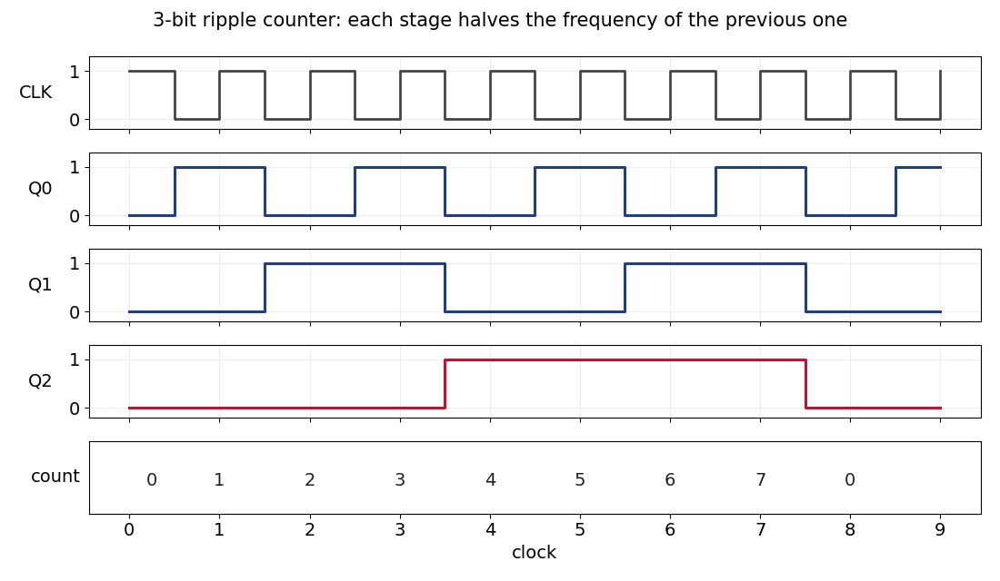

How a circuit remembers its state: latches and flip-flops, one-shots and the 555, shift registers, counters and state machines, programmable logic (PAL, CPLD, FPGA). Built from Floyd Chapters 7 to 10 (no lecturer slides).
CO/CLO: none statedno lecturer slides (built from the books)Questions: 177 (102 original)
No lecturer slides for this part (built from the books) · Tooley §5.6-5.8 (monostable, bistable, logic families) · Floyd Ch.7 (PDF p.388), Ch.8 (450), Ch.9 (498), Ch.10 (562) · Book content map
After this module you will
tell a latch from an edge-triggered flip-flop and write the S-R, D, J-K, T tables
compute the pulse width of a one-shot and the frequency and duty cycle of a 555 astable
derive the contents of a shift register, the ring and Johnson sequences and the delay N/f
determine the flip-flops, modulus, output frequency and cumulative delay of ripple, synchronous and cascaded counters
tell PAL, GAL, CPLD and FPGA apart and describe the design flow and JTAG boundary scan
Latches and flip-flops are two-state memory elements that differ in how they time a change
S-R latch and gated D latch
Edge-triggered D, J-K and T flip-flops
Preset, clear and timing parameters
A latch changes with a level, a flip-flop with a clock edge
A latch and a flip-flop are both bistable devices: two stable states, SET (Q = 1) and RESET (Q = 0). A latch responds to its inputs (asynchronously) or while its enable EN is active; an edge-triggered flip-flop samples its inputs only at the rising or falling edge of the clock (synchronously). Floyd 7-1, 7-2.
Device
When it changes
Control inputs
S-R latch
as soon as S or R changes (asynchronous)
S, R
Gated D latch
while EN is active
D, EN
Edge-triggered flip-flop
only at the active clock edge
D or J, K, T, and the clock
📖 Explanation for beginners
A latch is like a push-and-hold switch: the lamp changes the moment you press. A flip-flop is like a camera that fires only when the flash goes off (the clock edge): whatever the inputs do between two shots has no effect.
An S-R latch is two cross-coupled NOR or NAND gates; activating both inputs at once is the forbidden state
Cross-coupling stores the state: each gate's output is an input of the other. With two NOR gates the inputs are active HIGH; with two NAND gates they are active LOW (Floyd 7-1).
NOR: S
R
Q
Meaning
0
0
no change
memory
1
0
1
SET
0
1
0
RESET
1
1
Q = Q̅ = 0
forbidden
NAND: S
R
Q
Meaning
1
1
no change
memory
0
1
1
SET
1
0
0
RESET
0
0
Q = Q̅ = 1
forbidden
📖 Explanation for beginners
The forbidden state makes both outputs equal, so Q and Q̅ are no longer complements; releasing both inputs together gives an unpredictable result. The site checked both tables by simulating the gates until they settle.
A gated D latch makes Q follow D while EN = 1 and holds when EN = 0
Adding an EN gate to the S-R latch and wiring $S=D$, $R=\overline{D}$ makes the forbidden state impossible (Floyd 7-1).
EN
D
Next Q
Meaning
0
x
Q
hold
1
0
0
RESET
1
1
1
SET
The D latch is the simplest 1-bit memory: a data input D and an enable input EN.
📖 Explanation for beginners
While EN = 1 the latch is "transparent": Q follows every change of D. To capture a value at one instant you need an edge-triggered flip-flop.
D, J-K and T flip-flops change only at a clock edge; the J-K has all four modes
D flip-flop: $Q^+=D$ at the active edge. J-K flip-flop (Floyd 7-2):
J
K
Next Q
Mode
0
0
Q
no change
0
1
0
RESET
1
0
1
SET
1
1
Q̅
toggle
Characteristic equation
$$Q^{+}=J\overline{Q}+\overline{K}\,Q$$
A T flip-flop toggles when $T=1$: $Q^+=Q\oplus T$; tie J = K = T.
📖 Explanation for beginners
J = K = 1 flips Q at every edge, so the output period is twice the clock period: the basis of frequency dividers and counters. The site checked that the characteristic equation matches the J-K table for all 8 combinations (J, K, Q).
Asynchronous preset and clear override the clock; setup time, hold time and propagation delay limit the speed
PRE sets Q = 1 and CLR sets Q = 0 regardless of the clock (active LOW on many ICs).
Set-up time $t_s$: the input must be stable before the clock edge; hold time $t_h$: it must stay stable after the edge.
Propagation delay $t_{PLH}$, $t_{PHL}$: from the clock edge until the output changes.
Also the maximum clock frequency, the minimum clock pulse width and the power dissipation (Floyd 7-3).
Illustration (assumed numbers, not a specific IC): $t_s=20$ ns and $t_h=5$ ns mean D must not change within a $20+5=25$ ns window around the clock edge.
📖 Explanation for beginners
If D changes inside the forbidden window the flip-flop can fall into an undefined in-between state (metastability). That is why every synchronous design must guarantee set-up and hold.
PART 2/5
02
Flip-flops store, divide frequency and count; the one-shot and the 555 make pulses and oscillations from RC
Parallel storage, frequency division, counting
The 74121 one-shot
The 555 timer: monostable and astable
Flip-flops have three core uses: parallel data storage, frequency division and counting
(1) Parallel storage: n D flip-flops sharing a clock hold n bits. (2) Frequency division: each J-K flip-flop in toggle mode halves the frequency. (3) Counting: n flip-flops count through $2^n$ states (Floyd 7-4).
FFs n
Output frequency
States
1
f / 2
2
2
f / 4
4
3
f / 8
8
4
f / 16
16
5
f / 32
32
📖 Explanation for beginners
Example: a 32,768 Hz crystal through 15 divide-by-2 stages gives exactly 1 Hz because $32{,}768=2^{15}$ (a wristwatch).
A one-shot makes one pulse whose width is set by an RC when triggered
A one-shot is a monostable multivibrator: one stable state; when triggered it outputs a pulse $t_W$ wide and returns by itself. A nonretriggerable one-shot ignores new triggers while timing; a retriggerable one restarts its timing (Floyd 7-5).
74121 (nonretriggerable)
$$t_W=0.7\,R\,C_{EXT}$$
Rexternal resistor or the internal 2 kΩ
C_{EXT}external capacitor
Example: with the internal 2 kΩ and a wanted $t_W=10$ μs, $C=10\,\mu s/(0.7\times2000)=7143$ pF.
📖 Explanation for beginners
Note: the factor 0.7 is $\ln 2\approx0.693$, the time for the capacitor to charge to the halfway level. The site computed both ways and they agree within 1 %. The 7143 pF figure matches Floyd answer 7-11.
The 555 timer works as a one-shot ($t_W=1.1RC$) or as an oscillator with a duty cycle above 50 %
Monostable: $t_W=1.1\,R_1C_1$; Floyd's example $R_1=2.2$ kΩ, $C_1=0.01$ μF gives $t_W=24.2$ μs. Astable, C charges through $R_1+R_2$ and discharges through $R_2$:
redrawn from the Floyd 7-6 formulas; R1 = 1 kΩ, R2 = 2 kΩ, C = 0.1 μF give T = 0.35 ms📖 Explanation for beginners
The duty cycle is always above 50 % because $R_1+R_2>R_2$. For below 50 % put a diode across $R_2$ (Floyd Figure 7-59). With these values the 1.44 formula gives 2,880 Hz while $1/T$ with 0.7 gives 2,857 Hz: a 0.8 % difference from rounding $1/0.693\approx1.44$.
PART 3/5
03
A shift register moves bits along a chain of flip-flops and gives ring and Johnson counters and delay lines
Four data I/O types
Ring and Johnson counters
Applications: delay, serial-parallel conversion
A shift register has four I/O types; a parallel load takes one pulse, a serial load takes n
A register stores and moves data (Floyd 8-1, 8-2). Four types: serial in/serial out (SISO), serial in/parallel out (SIPO), parallel in/serial out (PISO), parallel in/parallel out (PIPO).
Floyd example: a 100 kHz clock enters 8 bits in $8\times10\,\mu s=80\,\mu s$. A parallel entry of 8 bits needs one pulse, and the delay is one flip-flop propagation delay.
Feeding the last output back gives a ring counter (modulus n); feeding it back inverted gives a Johnson counter (modulus 2n)
Two shift register counters (Floyd 8-4) have specified state sequences, starting at 1000 (ring) and 0000 (Johnson), shifting right:
A Johnson counter needs half as many flip-flops as a ring counter of the same modulus, and each state decodes with a two-input AND gate.
📖 Explanation for beginners
A modulus-8 ring counter needs 8 flip-flops, a modulus-8 Johnson counter only 4: matching Floyd Chapter 8 Self-Test 7 and 8. A Johnson counter uses $2n$ of the $2^n$ possible states.
A shift register makes a delay line with delay $N/f$ and converts parallel data to serial
(Floyd 8-5.) An $N$-bit SISO register delays a signal by exactly $N$ clock periods. For a delay $t$ the clock must be $f=N/t$.
Floyd Self-Test 9: 8 bits and a 24 μs delay need $f=8/24\,\mu s=333$ kHz. Serial data links also use a PISO at the sender and a SIPO at the receiver (serial ↔ parallel).
📖 Explanation for beginners
This is the idea behind aircraft serial links (Module 05): both ends need a common clock or bit rate. The site computed 333.3 kHz two ways (division and reciprocal): they agree.
PART 4/5
04
A counter is a state machine: ripple is simple but slow, synchronous is fast but needs control logic
Moore and Mealy state machines
Asynchronous (ripple) counters
Synchronous and up/down counters
Truncated, cascaded and decoded counters
A counter is a finite state machine; the modulus is the actual number of states in its sequence
A state machine is a sequential circuit with a finite number of states in a prescribed order (Floyd 9-1). Moore: the outputs depend only on the present state. Mealy: the outputs depend on the present state and on the inputs. Both consist of combinational logic and memory (flip-flops); the clock is not counted as a controlling input.
Moore
Mealy
Outputs depend on
present state
present state and inputs
Example
a counter with a fixed modulus
count 25, 50 or 100 tablets (bottling) chosen by modulus-select inputs
📖 Explanation for beginners
Note: the printed key of Floyd Chapter 9 Self-Test 2 says "(a) inputs", half of the Mealy definition; the site uses "(d) inputs and the present state", following the text of 9-1.
Ripple counter: each stage toggles when the previous one falls from 1 to 0, so the delay adds up to $n\times t_{pd}$
In an asynchronous (ripple) counter each flip-flop takes its clock from the Q output of the previous one (Floyd 9-2). Maximum modulus $2^n$. The cumulative delay must be less than the clock period.
Maximum clock frequency
$$f_{max}\approx\frac{1}{n\,t_{pd}}$$

redrawn after the idea of Floyd 9-2; propagation delay is ignored
Floyd Self-Test 10: 4 flip-flops of 12 ns each: recycling from 1111 to 0000 takes $4\times12=48$ ns.
📖 Explanation for beginners
While the stages flip one after another the outputs briefly show wrong codes (for example the change from 0111 to 1000 passes through intermediate codes): which is why decoding the outputs of a ripple counter needs care.
A synchronous counter clocks every flip-flop together, so it is faster; AND gates on J and K control it
(Floyd 9-3, 9-4, 9-5.) Every flip-flop receives the same clock; flip-flop $k$ toggles only when all lower bits are 1 (J = K = the product of the lower Q outputs). An up/down counter reverses with an UP/DOWN control input. Design: state diagram → next-state table → J-K excitation table → K-map minimisation → circuit.
Q → next Q
J
K
0 → 0
0
x
0 → 1
1
x
1 → 0
x
1
1 → 1
x
0
📖 Explanation for beginners
The J-K excitation table comes from the J-K table: going from 0 to 1 needs J = 1 and any K (set or toggle both work), and so on. The site checked the table by program for all four transitions.
A truncated counter has a modulus that is not a power of 2; cascading multiplies the moduli
A truncated counter skips states. A BCD (decade) counter counts 0000 to 1001 (ten states) and returns to 0000; a ripple counter does this by decoding 1010 to reset asynchronously (Floyd 9-2). A modulus $N$ needs $n=\lceil\log_2 N\rceil$ flip-flops. Cascading: the overall modulus is the product and the output frequency is $f/\prod N_i$ (Floyd 9-6).
Cascaded frequency division
$$f_{out}=\frac{f_{clk}}{N_1N_2\cdots N_k}$$
Floyd Self-Test 14: 10 MHz with stages 5, 8, 10, 10 gives $10\text{ MHz}/4000=2.5$ kHz. Decoding states (Floyd 9-7) can produce short glitches in a ripple counter.
📖 Explanation for beginners
A modulus-13 counter counts 0 to 12: it needs 4 flip-flops because $2^3=8<13\le16$, and starts from 0000 (Floyd Self-Test 16). The modulus-60 counter of a clock is a mod-10 followed by a mod-6.
PART 5/5
05
Programmable logic turns one chip into any circuit: from the simple PAL to CPLDs and FPGAs, loaded by software
SPLD: PAL, PLA, GAL
CPLD and FPGA
Design flow and JTAG boundary scan
An SPLD implements sums of products: a PAL has a programmable AND array and a fixed OR array
(Floyd 10-1.) Every Boolean function can be written as SOP, so an AND array followed by an OR is enough. Three kinds of SPLD:
Device
AND array
OR array
Note
PAL
programmable
fixed
one-time programmable (fuses)
PLA
programmable
programmable
more flexible than a PAL
GAL
programmable
fixed
erasable and reprogrammable, with output macrocells
Example: the XOR $F=\overline{A}B+A\overline{B}$ uses two product terms; the PAL keeps exactly four links (two per term) and blows the other fuses.
📖 Explanation for beginners
Floyd Chapter 10 True/False 1 tests exactly this: "a PAL has a programmable OR array and a fixed AND array" is FALSE (it is the other way round).
A CPLD joins several LABs through the PIA; an FPGA has logic blocks (CLBs) and I/O blocks with a much higher density
CPLD (Floyd 10-2, 10-3): several LABs (each roughly one SPLD) joined by the PIA; each LAB holds macrocells: an AND-OR array, multiplexers that choose the mode (combinational or registered) and a programmable D or J-K flip-flop. The LUT-CPLD variant uses look-up tables instead of an AND-OR array. FPGA (Floyd 10-4): CLBs, I/O blocks and programmable interconnect; an SRAM FPGA loses its configuration when power is removed, an antifuse one does not. Simple, numerous blocks are called fine grained.
📖 Explanation for beginners
An $n$-input LUT stores $2^n$ bits and implements $2^{2^n}$ functions: a 4-input LUT is 16 bits and 65,536 functions. The book says an FPGA is denser than a CPLD; the printed key of True/False 7 wrongly says LABs are not in CPLDs so the site uses "they are".
The design flow goes from design entry through synthesis and simulation to downloading; JTAG uses four pins TDI, TDO, TCK, TMS
(Floyd 10-5, 10-6.) The design flow: design entry (schematic or HDL) → synthesis to a netlist (EDIF format) → functional simulation (the user supplies the input waveforms) → place and route for the target device → timing simulation → download of the programming file. Boundary scan (JTAG) tests a board through the test access port (TAP) with four signals: TDI (data in), TDO (data out), TCK (clock), TMS (mode select); it is described in BSDL.
📖 Explanation for beginners
Hardware description languages (HDL) are the subject of Module 14 (VHDL, Tooley Chapter 17). Here just remember that HDL is one of the two ways of design entry.
Detailed notes
Five worked examples
Example · Example 1: a 5-bit ripple counter
5 flip-flops of 15 ns each: total delay $5\times15=75$ ns; $f_{max}\approx1/75\text{ ns}=13.3$ MHz; modulus $2^5=32$.
The module has no lecturer slides. Floyd Chapter 7 (PDF p.388, latches, flip-flops, one-shot, 555), Chapter 8 (p.450, shift registers), Chapter 9 (p.498, counters), Chapter 10 (p.562, programmable logic). The original questions are the True/False and Self-Test items of the four chapters, with printed keys on pages 448, 495, 560, 626. Tooley 5.6 to 5.8 (monostable, bistable, logic families) is already in Module 02. Neither the lecturer slides nor Tooley mention microcontrollers here.
Floyd printed keys that disagree with the text (the site follows the text)
Chapter 9 Self-Test 2: key (a) "inputs"; section 9-1 says a Mealy output depends on both the present state and the inputs, so (d) is used.
Chapter 10 True/False 7: key F for "LABs are found in CPLDs"; section 10-2 defines the LAB as the CPLD block, so the answer is True.
Chapter 10 Self-Test 9: key (b) "gates and a shift register"; section 10-2 describes the macrocell as gates, multiplexers and a flip-flop, so (a) is used.
Chapter 8 Self-Test 10 is left out because it needs Figure 8-36, not yet checked. Chapter 10 True/False 5 misprints "FGPA".
The PDF text layer of Chapter 8 reads microseconds (μs) as "ms" in Self-Test 5, 6, 9; the page image shows the unit is μs.
Floyd Chapter 9 Self-Test 2: printed key (a) "inputs"; section 9-1 says a Mealy output depends on both the present state and the inputs, so the answer is (d) "(a) and (c)". The site uses (d).
Floyd Chapter 10 True/False 7: printed key F for "LABs are found in CPLDs"; section 10-2 names each SPLD array in a CPLD a LAB. The site uses True.
Floyd Chapter 10 Self-Test 9: printed key (b) "gates and a shift register"; section 10-2 describes the macrocell as an AND-OR array, multiplexers and a flip-flop. The site uses (a).
Floyd Chapter 8 Self-Test 5, 6, 9: the PDF text layer reads microseconds (μs) as "ms"; the page image shows the unit is μs (80 μs, 8 μs, 1 μs, 24 μs).
Floyd Chapter 10 True/False 5 prints "FGPA" for FPGA (a typo).
The 555 astable factor 1.44 is 1/0.693 rounded: with R1 = 1 kΩ, R2 = 2 kΩ, C = 0.1 μF the formula gives 2,880 Hz while 1/T = 2,857 Hz (0.8 % apart). The site uses Floyd's formula for frequency and 0.7 for times.
Floyd Chapter 8 Self-Test 10 (Figure 8-36) was read from the page image: the printed key (c) agrees with the text of 8-5 (the 0 is rotated and a LOW is applied to each row in turn).